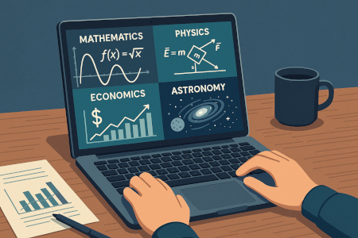
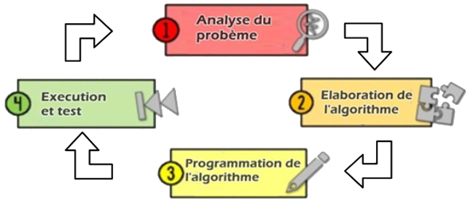
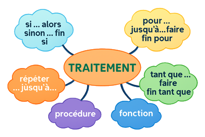
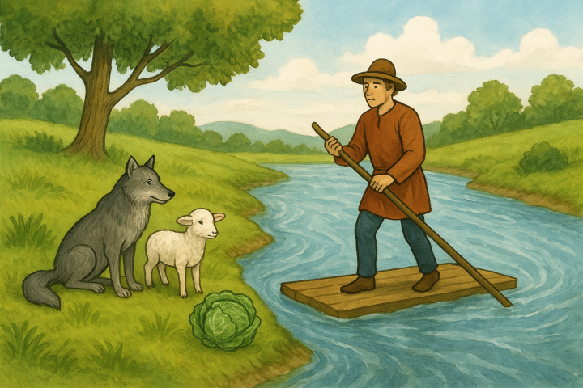
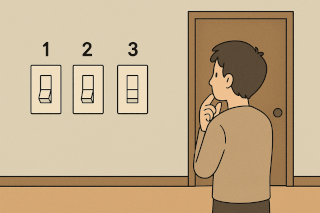
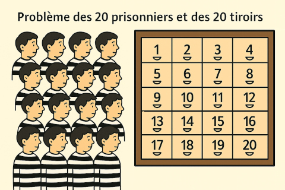

Quelques domaines d'utilisation de l'informatique
L'informatique est un outil précieux dans tous les domaines : mathématiques, physiques, économie,
astronomie,
énergie, médecine, enseignement, etc.
Les programmes informatiques sont développés dans le but de résoudre des problèmes de tous les genres et
les
tailles.
Un programme effectue le traitement des données selon un algorithme préétablit.
Ainsi, un problème peut être de petite taille (calculer la somme de deux entiers) ou de grande taille
(contrôler une navette spatiale ou un réacteur nucléaire à distance).
Etapes de résolution d'un problème

Etapes de résolution d'un problème
Le processus de résolution d'un problème comprend 4 étapes :
L'analyse du problème
L'élaboration de l'algorithme
L'implémentation de l'algorithme
L'exploitation et la maintenance
Analyse du problème
Cette étape s'intéresse aux transformations (ou traitements) à effectuer sur les
entrées pour produire des sorties utiles.
Analyse
Exemple
Calculer et afficher la somme et le produit de deux entiers.
Données : a et b (deux entiers)
Traitements : s ← a + b et p ← a * b
Sorties : Afficher la somme (s) et le
produit (p)
Elaboration de l'algorithme
Un algorithme est une suite finie d'étapes permettant de résoudre
un problème.
Un algorithme est écrit, souvent, en pseudo-code et il doit respecter la
syntaxe suivante :
Algorithme Nom
Début
Traitements
Fin

TDO
Objet
Type
Exemple
Calculer et afficher la somme et le produit de deux entiers.
Algorithme Somme_Prod
Début
Ecrire("Donner a ? ") ; Lire(a)
Ecrire("Donner b ? ") ; Lire(b)
s ← a + b
p ← a * b
Ecrire(a, "+", b, "=", s)
Ecrire(a, "*", b, "=", p)
Fin
TDO
Objet
Type
a, b, s, p
entier
Programme
L'algorithme écrit en pseudo-code n'est pas exploitable sur un ordinateur.
Il doit être, par exemple, traduit en Python.
Python est un langage de programmation, parmi d'autres.
Exemple
Calculer et afficher la somme et le produit de deux entiers.
a = int(input("Donner a ? "))
b = int(input("Donner b ? "))
s = a + b
p = a * b
print(a, "+", b, "=", s)
print(a, "*", b, "=", p)
Exécution et tests
Le programme est exécuté, corrigé et
débogué afin d'éliminer tous les disfonctionnements possibles.
Exemple
Calculer et afficher la somme et le produit de deux entiers.
# Programme à corriger
a = input("Donner a ? ")
b = input("Donner b ? ")
s = a + b
print("a + b =", s)
p = a * b
print(a "*" b "=" p)
Problèmes de logique
Problème des deux cordes
Tu as 2 cordes qui brûlent en exactement 60 minutes, mais pas de façon uniforme (elles peuvent brûler plus
vite à certains endroits).
Question : Comment mesurer exactement 45 minutes avec ces deux cordes et un briquet ?
Problème des deux cordes
Problème des neufs billes
Vous avez 9 billes, dont 8 ont le même poids (100g) et une est plus légère (90g). Votre objectif est de
déterminer, en utilisant une balance à plateaux, quelle est la bille plus légère en seulement 2 pesées.
Démonstration
Cliquer sur les billes pour les mettre dans les plateaux de la bascule.
{{ball.num}}
{{ball.num}}
{{ball.num}}
{{ball.num}}
{{ball.num}}
{{ball.num}}
La bille cherchée est parmi les billes : {{ball.num}},
La bille cherchée est parmi les billes : {{ball.num}},
La bille cherchée est parmi les billes : {{ball.num}},
Mettre une seule bille dans chacun des plateaux de la bascule.
{{ball.num}}
{{ball.num}}
{{ball.num}}
{{ball.num}}
{{ball.num}}
{{ball.num}}
La bille cherchée est la bille numéro {{balls[0].num}} qui pèse
{{balls[0].weight}}g.
La bille cherchée est la bille numéro {{ballsRight[0].num}} qui pèse
{{ballsRight[0].weight}}g.
La bille cherchée est la bille numéro {{ballsLeft[0].num}} qui pèse
{{ballsLeft[0].weight}}g.
Problème de la rivière

Problème de la rivière
Il y a longtemps, un fermier est allé au marché et a acheté un loup , un
agneau et un panier de choux. De retour chez lui, il arriva sur la rive d'une
rivière et loua une barque pour la traverser, mais la barque ne pouvait transporter (à part
lui) qu'un seul parmi le loup, l'agneau et le chou.
S'il était laissé seul sans sa présence, le loup mangerait l'agneau, ou
l'agneau mangerait le chou; le loup, carnivore, ne mangeait pas de choux.
Démonstration
Etape
{{idx + 1}} :
Perdu : {{message}}
Tours de Hanoï
Le jeu des tours de Hanoï est constitué de trois piquets A, B et C, placés verticalement, et de n disques
de taille décroissante. Chacun des disques est percé en son centre pour être mis autour de l’un ou l’autre
des trois piquets. Les n disques sont initialement placés par taille décroissante autour du piquet A (celui
de gauche), formant ainsi une tour. Le but du jeu consiste à déplacer les disques jusqu’à parvenir à la
situation finale dans laquelle tous les disques se retrouvent autour du piquet C par ordre de taille
décroissante. Les disques peuvent aller et venir librement sur les piquets, en suivant deux règles :
on ne déplace qu’un seul disque à la fois;
un disque ne peut jamais être posé sur un disque plus petit.
{{disk}}
Opérations
{{op}}
Problème des trois interrupteurs et de l'ampoule
Tu es dans une pièce fermée avec 3 interrupteurs. Ces interrupteurs contrôlent une seule ampoule située dans
une autre pièce, que tu ne peux pas voir depuis ta position.
Tu peux :
Actionner les interrupteurs autant de fois que tu veux.
Aller une seule fois dans la pièce où se trouve l’ampoule pour vérifier son état (allumée, éteinte).

Problème des trois interrupteurs et de l'ampoule
Question : Comment déterminer quel interrupteur contrôle l’ampoule, en une seule visite dans
la pièce de l’ampoule ?
Problème des 20 prisonniers

Problème des 20 prisonniers
Il y a 20 prisonniers numérotés de 1 à 20. Dans une pièce, il y a
20 tiroirs, chacun contenant un numéro unique de 1 à 20, placé aléatoirement.
Chaque prisonnier peut ouvrir jusqu’à 50 tiroirs pour essayer de trouver son propre numéro.
Ils ne peuvent pas communiquer une fois l’expérience commencée.
Si tous les prisonniers trouvent leur numéro, ils sont tous libéré, sinon tous sont exécutés.
Question : Quelle stratégie peuvent-ils utiliser pour maximiser leurs chances de survie ?